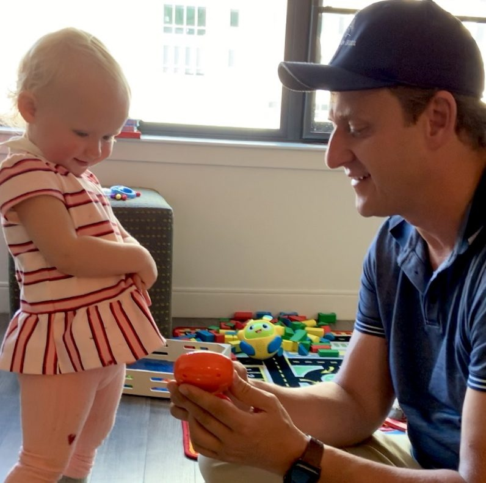
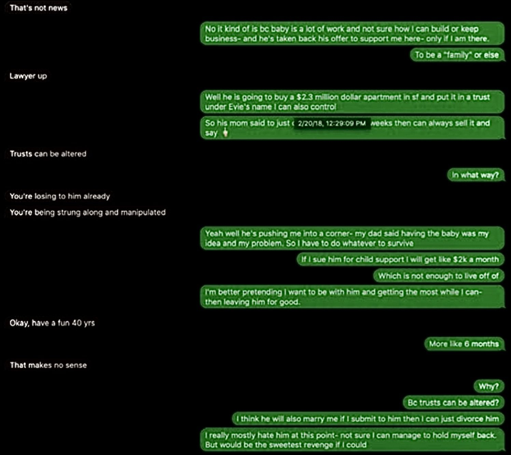
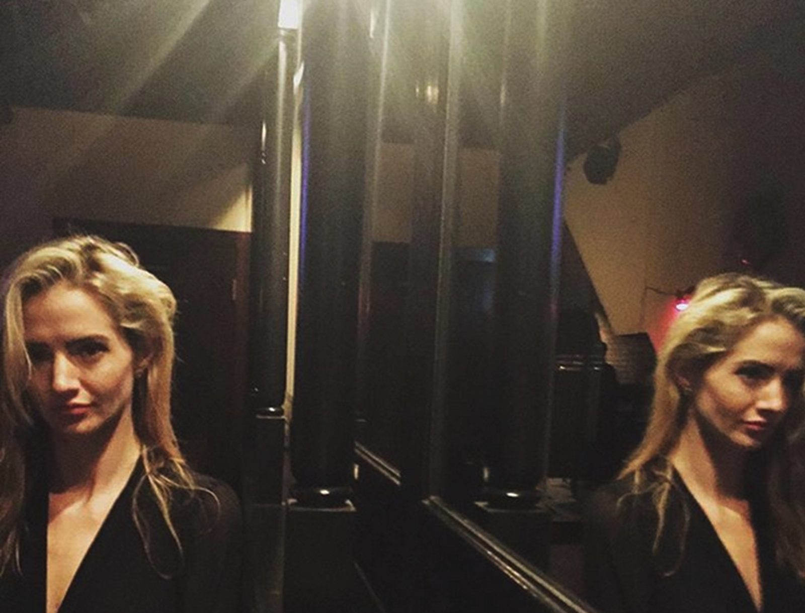

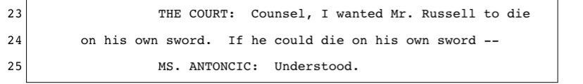

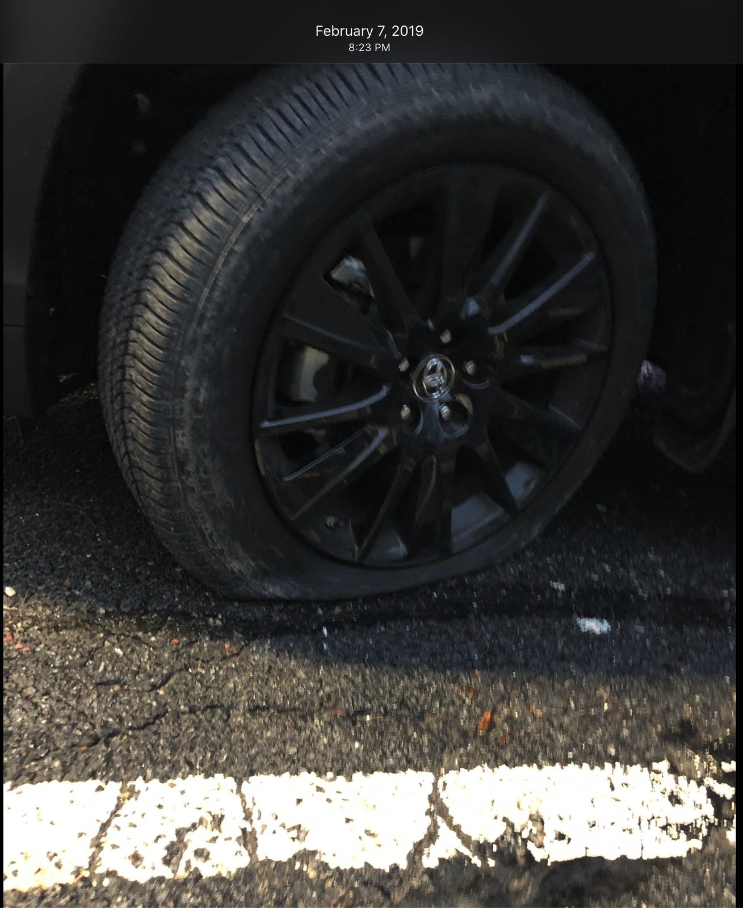
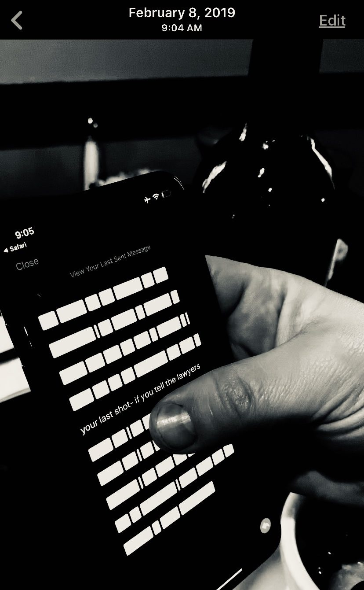
ChappaquaPoison v3 — layout classes for controlled photo sizing and multi-image evidence displays.
Max 360px. Centered. Portraits, detail shots, small evidence items.
<div class="photo-sm">
<figure>
<img src="..." alt="...">
<figcaption>Caption</figcaption>
</figure>
</div>
Max 560px. Centered. Standard documentary images, letters, court documents.
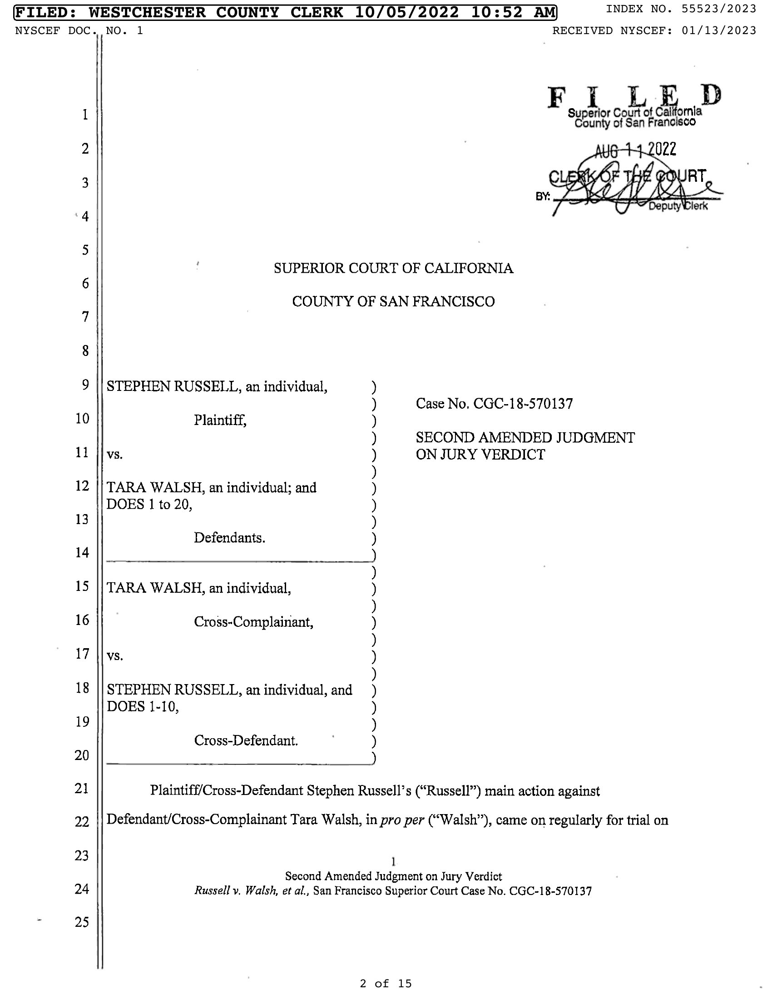
<div class="photo-md">
<figure>
<img src="..." alt="...">
<figcaption>Caption</figcaption>
</figure>
</div>
Two images at equal width. Contrast evidence: what was said beside what happened.
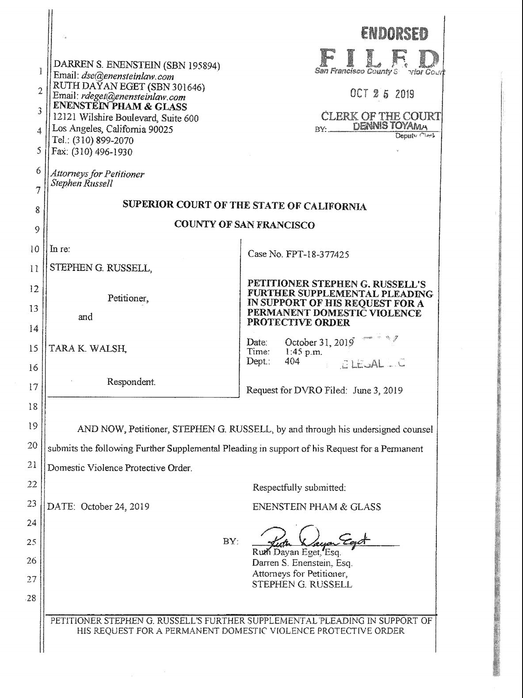
<div class="photo-pair">
<figure>
<img src="..." alt="...">
<figcaption>Left caption</figcaption>
</figure>
<figure>
<img src="..." alt="...">
<figcaption>Right caption</figcaption>
</figure>
</div>
Three images in a row. Sequences, triptychs, three judges, three letters.
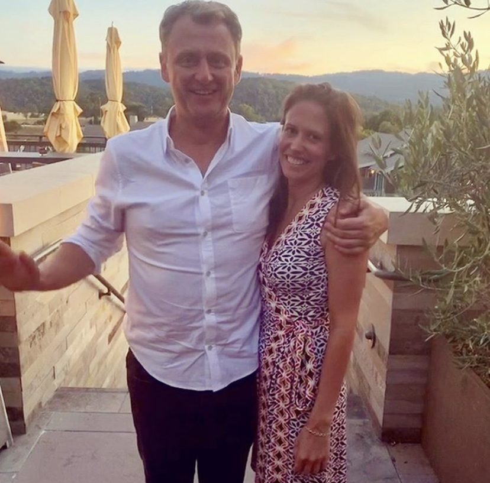
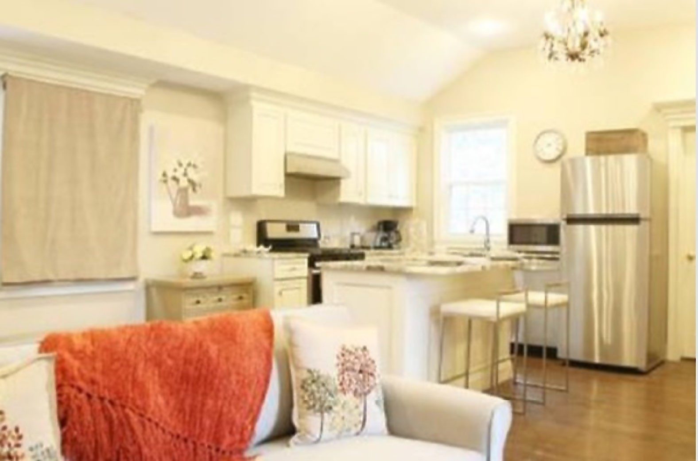
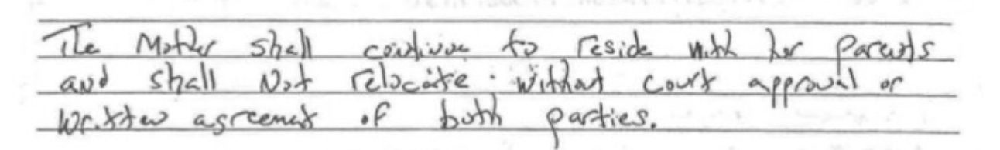
<div class="photo-trio"> <figure><img src="..."><figcaption>...</figcaption></figure> <figure><img src="..."><figcaption>...</figcaption></figure> <figure><img src="..."><figcaption>...</figcaption></figure> </div>
Four images in a square. Evidence clusters. Max 680px centered.
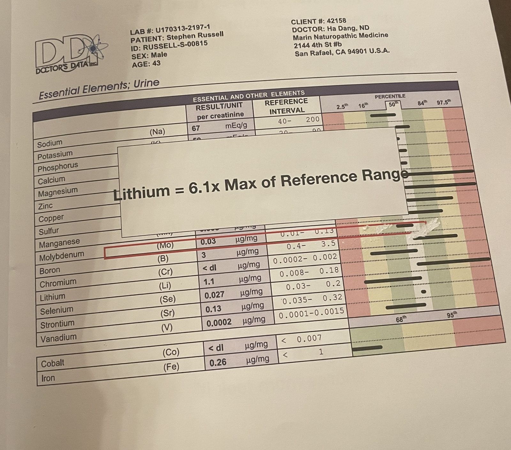
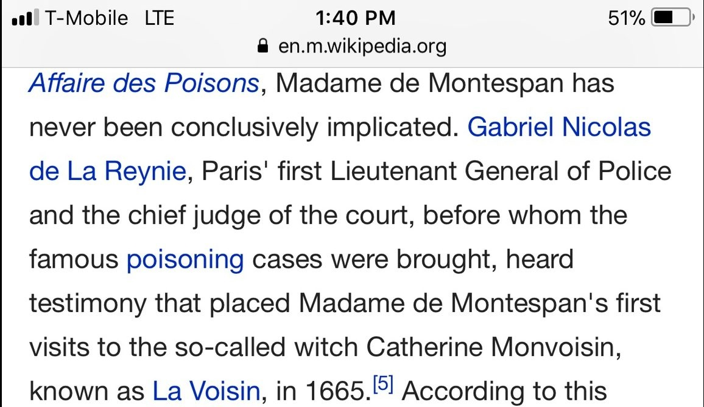
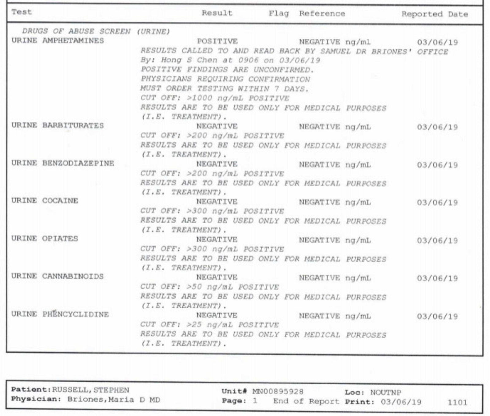
<div class="photo-grid-4"> <figure><img src="..."><figcaption>...</figcaption></figure> <figure><img src="..."><figcaption>...</figcaption></figure> <figure><img src="..."><figcaption>...</figcaption></figure> <figure><img src="..."><figcaption>...</figcaption></figure> </div>
Nine thumbnails. Volume evidence — the reader sees the weight before examining any single piece. Square crop, max 720px.






Evie's Story Book 2 — Nine pages from the evidence volumes Kelly built
<div class="photo-grid-9"> <figure><img src="..."></figure> <!-- repeat 9 times --> </div> <p class="photo-grid-caption">Overall caption</p>
These classes work directly in the post markdown files. Wrap your images in the appropriate div class:
<!-- Small single photo -->
<div class="photo-sm">
<figure>
<img src="../Evidence/photos/evidence/photo.jpg" alt="Description">
<figcaption>Caption text</figcaption>
</figure>
</div>
<!-- Side-by-side contrast -->
<div class="photo-pair">
<figure>
<img src="../Evidence/photos/evidence/left.jpg" alt="Left">
<figcaption>What was claimed</figcaption>
</figure>
<figure>
<img src="../Evidence/photos/evidence/right.jpg" alt="Right">
<figcaption>What happened</figcaption>
</figure>
</div>
All layouts stack vertically on mobile (≤768px). Trio collapses to 2+1 on tablets.